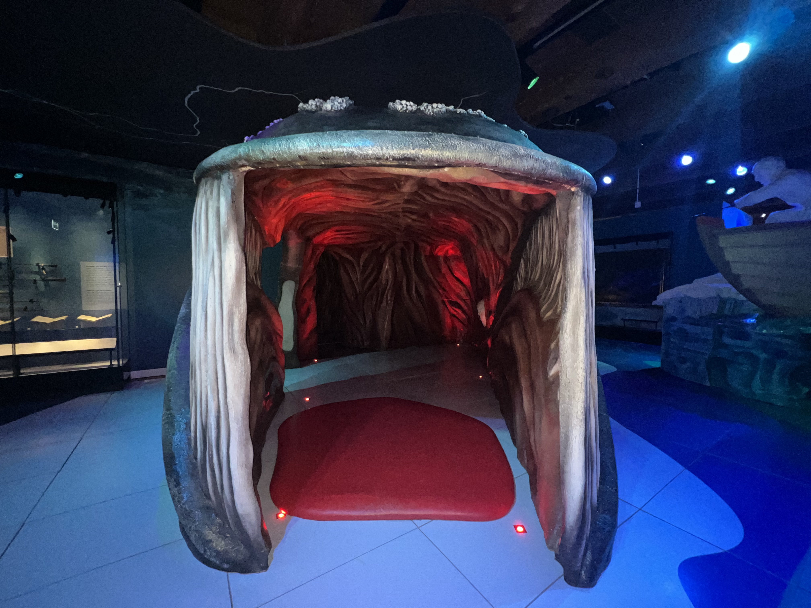
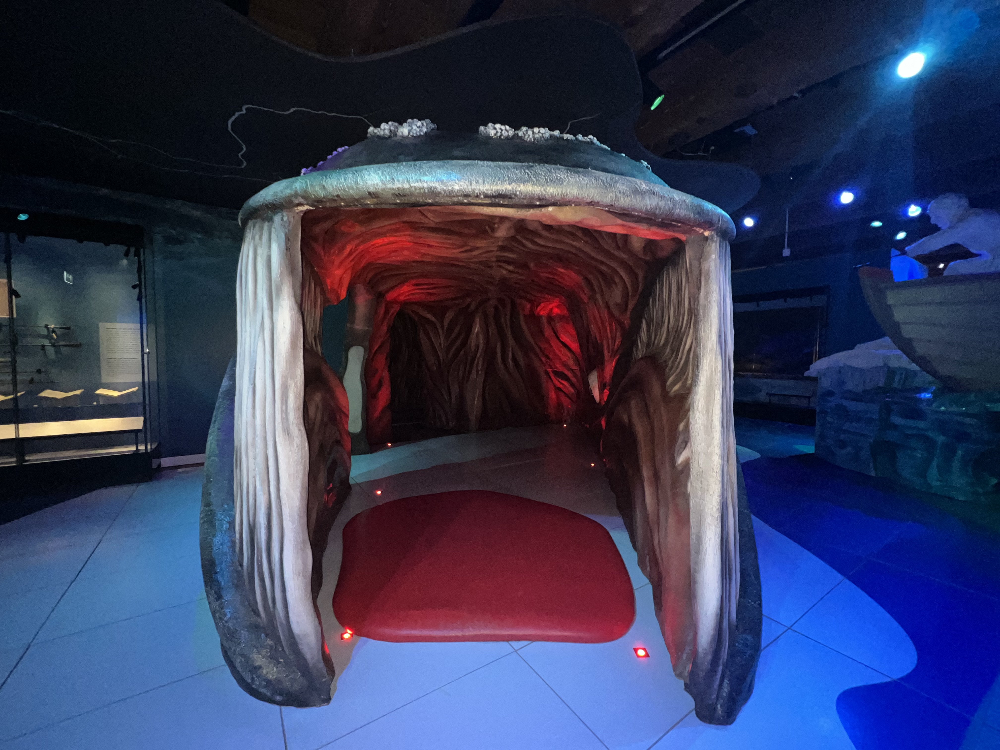

Tickets
Tickets
Tickets
Tickets
 


The National Maritime Museum is housed in 's Lands Zeemagazijn (the Arsenal). This historic building dates from 1656 and was designed by Daniel Stalpaert as a storehouse for the Admiralty of Amsterdam. The storehouse was built when back when Amsterdam was the biggest port on earth. Now, almost 350 years later and the Lands zeemagazijn is still an impressive building with an unique character. The perfect location for The National Maritime Museum thats been established here sinds 1973.

The National Maritime Museum presents a retrospective exhibition of father and son Willem van de Velde; two leading marine artists from the 17th century with a thriving international family business. Each artist with their own specialism: pen and oil paintings.

Displaying over fifty masterpieces from the museum’s collection, Republic at Sea tells the remarkable story of the Netherlands as a maritime nation. A 60 minutes dive into the 'Dutch golden age'!

The Christiaan Brunings is a sailing monument waiting for you to experience it at the jetty alongside The National Maritime Museum. The ship was built in 1900 for the national Department of Waterways and Public Works (Rijkswaterstaat) as an icebreaker, but, rather uniquely for the time, was built with a very luxurious interior to allow her to serve as an executive vessel as well. She was named after Christiaan Brunings, the Dutch marine engineer recognized as the founding father of the department.
We went there because our 11 year-old wanted. It ended being one of the best experiences of our trip. Very interesting whale story, entertaining interactive exhibitions and games. All 4 of us liked it. We did not pre-book it, it seems there are no lines.
One of Amsterdam's top museums with lots of exhibits to please all types and ages. For the kids there is the oustide VOC ship and, for all ages, the models of ships. There are also many maritime pictures. The courtyard / entrance area is splendid.
Really enjoyed this museum to learn about the power and global reach of the Dutch maritime history. Nice recreation of the old ship. Unexpected 3-D virtual reality tour of the harbor on board. Maybe I enjoyed it so much because I was by myself and could read everything at my pace.